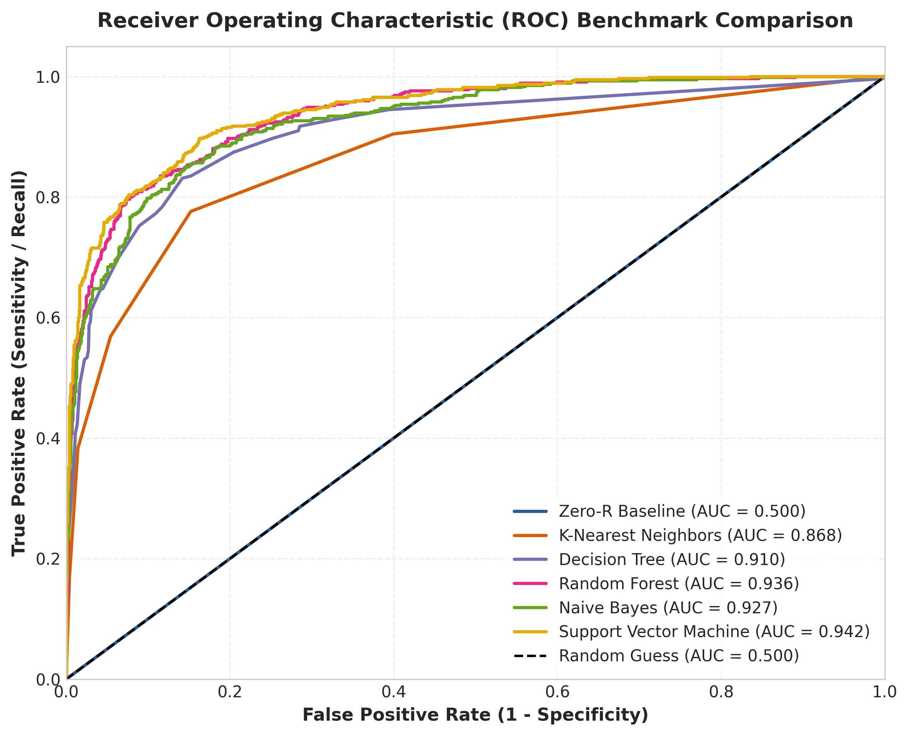
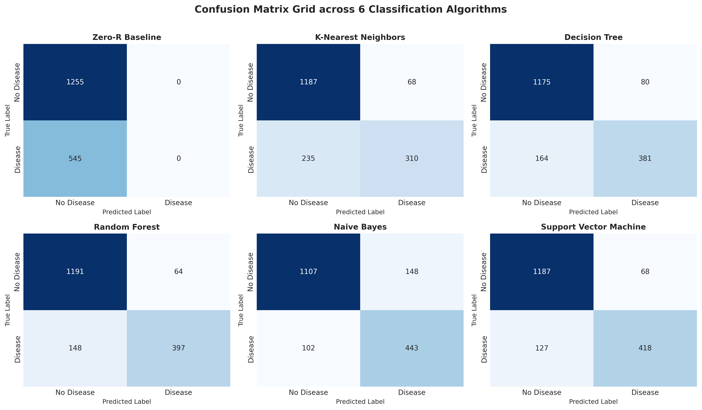
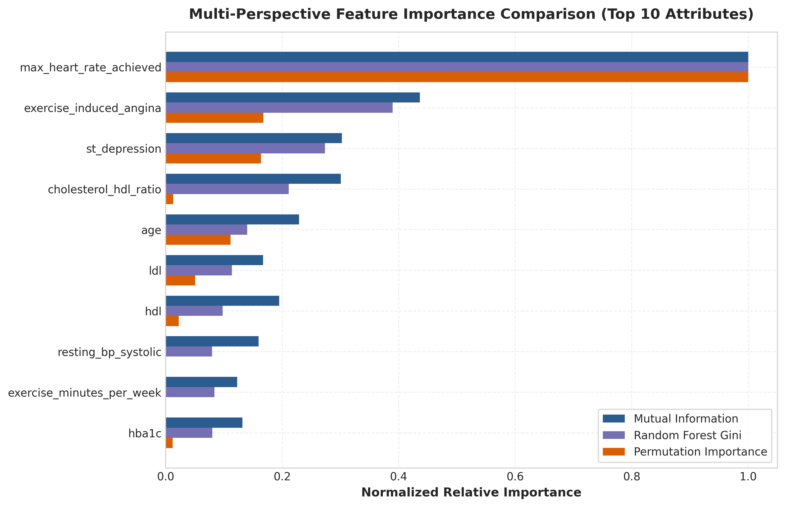

Mini-Projet de Fouille de Données (Data Mining)
Concevez un pipeline d'analyse de données de bout en bout (End-to-End Data Science Pipeline), déployez une application web interactive et produisez un rapport scientifique de niveau recherche.
Directives Générales & Traçabilité Git
Modalités d'organisation, règles de confidentialité et discipline de dépôt.
Politique Git Strict & Traçabilité
- Dépôt GitHub Public Obligatoire : Chaque projet doit être entièrement hébergé sur un dépôt GitHub public.
- Contributions Individuelles : Chaque membre doit contribuer avec son propre compte GitHub (commits réguliers, branches et Pull Requests).
- Pénalité Sanction : Un membre présentant un historique Git vierge ou symbolique recevra la note de 0/20 à titre individuel.
Anonymat sur les Supports Publics
- Interdiction des Noms Réels : Interdiction de mentionner les noms et prénoms réels dans les notebooks, le
README.mdou le rapport PDF. - Format du Code Étudiant : Utiliser exclusivement le code attribué (ex :
IASD01,IASD02,IASD03). - Spécialité + Numéro : Indiquer la spécialité suivie du numéro d'ordre dans l'équipe.
Parcours Techniques Algorithmiques
Sélectionnez au choix le parcours de classification supervisée ou de clustering non supervisé.
Algorithmes Obligatoires à Implémenter
Baseline (Zero-R)
Classifieur naïf de référence basé sur la classe prioritaire.
K-Nearest Neighbors (K-NN)
Analyse de la métrique de distance et étude de l'impact de $K$.
Arbres & Random Forest
Gain d'information, Indice de Gini et élagage par coût-complexité.
Naïve Bayes
GaussianNB / MultinomialNB avec lissage de Laplace.
Support Vector Machines (SVM)
Évaluation des noyaux (RBF, Linéaire, Poly) et tuning $(C, \gamma)$.
Familles de Clustering à Implémenter
K-Means Clustering
Méthode du coude (Elbow Method) et initialisation K-Means++.
K-Medoids (PAM)
Comparaison de la robustesse face aux valeurs aberrantes.
AGNES (Agglomératif)
Construction du dendrogramme avec liaisons Ward, Complete, Single.
DIANA (Divisif)
Analyse top-down de la séparation hiérarchique des groupes.
Grille d'Évaluation Hyper-Détaillée (Barème sur 20.0 Points)
Sous-fractionnement analytique pour une notation transparente et sans ambiguïté.
| Sous-Critère | Exigences Techniques & Critères de Notation | Points |
|---|---|---|
| PARTIE 1 : RIGUEUR TECHNIQUE & DATA MINING (10.0 POINTS) | ||
| 1.1 Prétraitement des Données | Nettoyage des valeurs manquantes/aberrantes, encodage (One-Hot/Label/Binary), normalisation/standardisation (Z-score/Min-Max). | 2.0 pts |
| 1.2 EDA & Tests Statistiques | Visualisations des distributions, matrice de corrélation, tests statistiques (χ², Mann-Whitney U, ANOVA, Shapiro-Wilk, Spearman/Pearson). | 3.0 pts |
| 1.3 Implémentation des Modèles | Implémentation rigoureuse de TOUS les algorithmes du parcours choisi (Zero-R, KNN, Arbre/RF, Naïve Bayes, SVM ou K-Means, PAM, AGNES, DIANA). | 1.0 pt |
| 1.4 Optimization & Validation Croisée | Réglage des hyperparamètres (GridSearch/RandomSearch) et validation croisée K-Fold ($K \ge 5$). | 2.0 pts |
| 1.5 Analyse des Métriques | Tableau comparatif multicritère, matrices de confusion, courbes ROC-AUC, Precision/Recall/F1 ou Silhouette/DBI/ARI. | 2.0 pts |
| PARTIE 2 : APPLICATION INTERACTIVE & ERGONOMIE (4.0 POINTS) | ||
| 2.1 Architecture UI & Stabilité | Application web/desktop fonctionnelle sans bugs (Streamlit, Gradio, Dash), code propre dans src/app.py. |
1.5 pts |
| 2.2 Dashboard EDA Interactif | Composant d'exploration dynamique permettant de filtrer les données et visualiser interactivement les graphiques. | 1.0 pt |
| 2.3 Prédiction Temps Réel | Formulaire dynamique de saisie générant des prédictions instantanées avec confiance/probabilité associée. | 1.5 pts |
| PARTIE 3 : TRAÇABILITÉ GIT & COMMITS INDIVIDUELS (3.0 POINTS) | ||
| 3.1 Structure du Dépôt | Respect de l'arborescence (data/, notebooks/, src/, docs/), présence de requirements.txt. |
1.0 pt |
| 3.2 Commits Individuels | Régularité des commits personnels sur GitHub. Note : Pénalité 0/20 attribuée individuellement si l'historique est vierge. | 2.0 pts |
| PARTIE 4 : RAPPORT PDF & DOCUMENTATION GITHUB (3.0 POINTS) | ||
| 4.1 Rapport Scientifique PDF | Rapport académique rédigé sous docs/Rapport_MiniProject.pdf (Problématique, méthodologie, justifications théoriques, résultats). |
1.5 pts |
| 4.2 Documentation README.md | README.md complet avec guide d'installation, matrice nominative des rôles et synthèse des résultats clés. | 1.5 pts |
Générateur Interactif d'Objet d'Email Officiel
Toutes les soumissions doivent être envoyées à datamining.project.student@gmail.com.
[DM-2026][INSCRIPTION] Groupe IASD01 - Prédiction Risque Cardiaque
Projet Modèle de Référence (Heart Disease Prediction)
Découvrez le projet étalon démontrant l'excellence technique attendue.
Prédiction du Risque Cardiaque par Machine Learning & Web App
Dataset Kaggle uditjain13/heart-disease-risk-2026 ($N = 9\,000$ enregistrements, 25 attributs). Benchmark de 6 classifieurs avec SVM (RBF) atteignant 89.17% d'Accuracy et 0.9422 de ROC-AUC.


